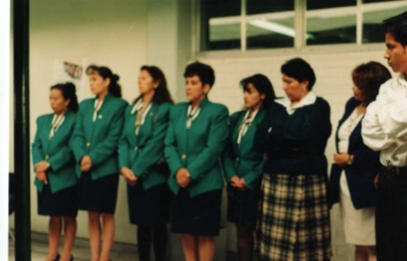
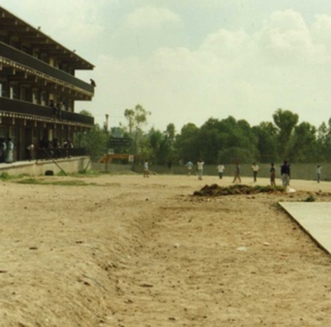
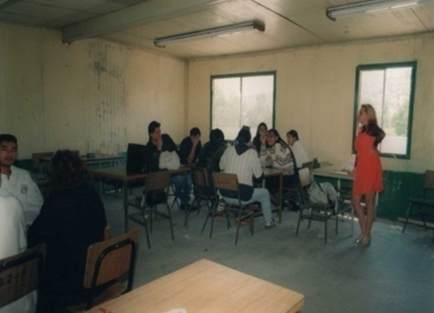
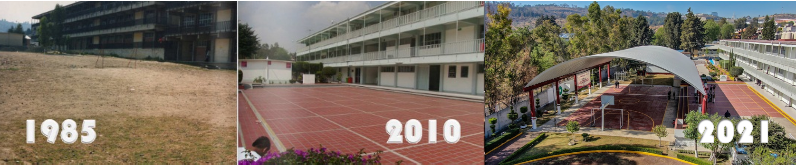

Nuestra Historia
Desde 1970, iba surgiendo la idea de crear un Sistema de Formación de Cuadros Mediso, con el que se podria contar con recursos humanos, los cuales fueran capaces de atender la necesidades del sector productivo. Y no solo a nivel nacional, sino aspirando a mas. a nivel global.
Con esto en mente, se fundo en 1985 el plantel Conalep Atizapán I, el cual se encuentra ubicado en Av. Ruiz Cortines Esq. Teotihuacán en el municipio de Atizapán de Zaragoza. Este mismo durante su primer decada llego a ofrecer carreras como profesional técnico Automotriz, profesional técnico en informática y profesional técnico de asistente ejecutivo
|  |  |  |
Posteriormente, la carrera en Automotriz se especializo en Combustión Interna, y se remplazo la carrera de Asistente Ejecutivo por la carrera de Profesional Técnico en Sistemas Automáticos.
Pero no fue hasta el año 2004, que con la llegada de la reforma académica, se contemplo dar el grado de bachillerato tecnológico a las carreras que ofertaba el Conalep, logrando con ello que los programas y planes de estudio sufrieran una modificación en su contenido y contexto.
Todos estos cambios se realizaron para que asi lograr que estos capaciten a los Profesionales Técnicos Bachiller (PTB). Con esto, la carreras impartidas quedaron de esta forma:
- PTB-Automotriz
- PTB-Informática
- PTB-Mantenimiento de Sistemas Automaticos
Y asi como a lo largo de la historia de nuestro plantel llego un nuevo cambio a las carreras en 2010, con la carrera de PTB en Mecatronica, siendo el reemplazo de la carrera en Sistemas Automaticos
